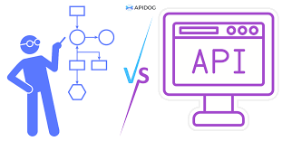
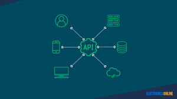

Frameworks y Desarrollo de APIs
Saber 3

En esta unidad se estudian los frameworks utilizados para el desarrollo de interfaces de programación de aplicaciones (APIs), así como el proceso necesario para su correcta implementación en aplicaciones orientadas a servicios.
1. Frameworks para el desarrollo de APIs
Un framework es un conjunto de herramientas y librerías que facilitan la creación de aplicaciones estructuradas, seguras y escalables.
Frameworks más utilizados
- Express.js: Framework ligero para Node.js ideal para APIs REST.
- Django REST Framework: Extensión de Django para crear APIs seguras en Python.
- Spring Boot: Framework de Java ampliamente utilizado en sistemas empresariales.
- Laravel: Framework PHP que permite desarrollar APIs con estructura clara.
2. Desarrollo de una Interfaz de Programación de Aplicaciones (API)
Una API permite que diferentes sistemas se comuniquen entre sí mediante peticiones HTTP.
Proceso de desarrollo de una API
- Definir el propósito: Determinar qué problema resolverá la API.
- Diseñar endpoints: Crear las rutas (ejemplo: GET /usuarios).
- Seleccionar métodos HTTP: GET, POST, PUT, DELETE.
- Conectar base de datos: Almacenar y recuperar información.
- Implementar seguridad: Autenticación y autorización.
- Realizar pruebas: Usar herramientas como Postman.
- Documentar: Explicar cómo usar la API correctamente.
Identificación solicitada

Los frameworks permiten organizar el desarrollo de aplicaciones orientadas a servicios, ofreciendo herramientas para el manejo de rutas, seguridad, validación y conexión con bases de datos.
El proceso de desarrollo de una API incluye planificación, diseño, implementación, pruebas y documentación, garantizando que la interfaz sea funcional, segura y escalable.